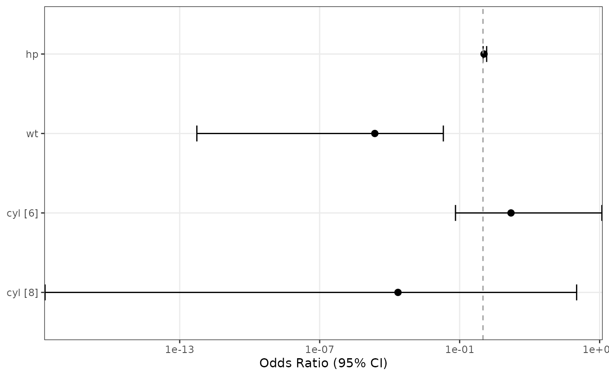

Convert parameters tables to forest data
Source:R/as_forest_data_parameters.R
as_forest_data_parameters.RdStandardizes coefficient tables from parameters::model_parameters()
(parameters_model objects) into forest_data. This brings forest plots
to the many model classes supported by parameters, including Bayesian,
robust, and standardized estimates.
Usage
# S3 method for class 'parameters_model'
as_forest_data(
data,
...,
term_labels = NULL,
exponentiate = NULL,
conf.level = NULL,
intercept = FALSE,
pretty_names = TRUE,
sort_terms = c("none", "descending", "ascending")
)Arguments
- data
A
parameters_modelobject fromparameters::model_parameters().- ...
Not used; must be empty.
- term_labels
Optional named vector used to relabel parameters. Names may be raw parameter names (such as
"cyl6") or formatted labels.- exponentiate
NULLkeeps the reported scale.TRUEconverts log-scale estimates to ratios andFALSEconverts ratios to the log scale.- conf.level
NULLuses the confidence level stored in the object. A number must match the stored level.- intercept
Logical; whether to keep the intercept.
- pretty_names
Logical; if
TRUE, use the formatted parameter names fromparameters. IfFALSE, use the raw parameter names.- sort_terms
How to sort rows:
"none","descending", or"ascending".
Value
A forest_data object. The original columns, such as SE and
df_error, are retained for table helpers.
Details
Estimates, intervals, and p-values are used exactly as parameters
reported them, including any exponentiate, standardize, or vcov
choices. Only fixed effects from the conditional component are kept, and
the intercept is dropped unless intercept = TRUE. Row labels use the
formatted parameter names from parameters (for example "cyl [6]").
Multivariate models with a Response column are faceted by response.
The effect scale follows the table: exponentiated tables are ratios on a
log10 axis, log-link coefficients such as log-odds are on the log scale,
and other coefficients are additive. The effect label is the coefficient
name reported by parameters, such as "Odds Ratio".
Examples
if (requireNamespace("parameters", quietly = TRUE)) {
fit <- glm(am ~ hp + wt + factor(cyl), data = mtcars, family = binomial())
params <- parameters::model_parameters(fit, exponentiate = TRUE)
ggforestplot(params)
}
